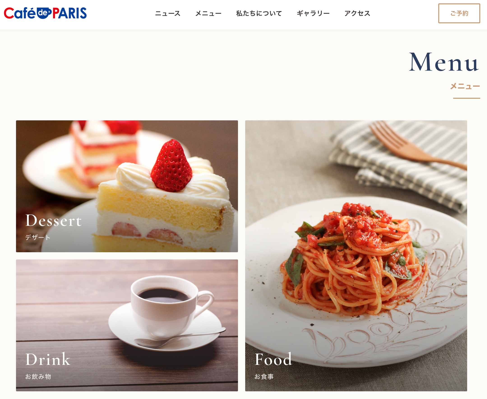
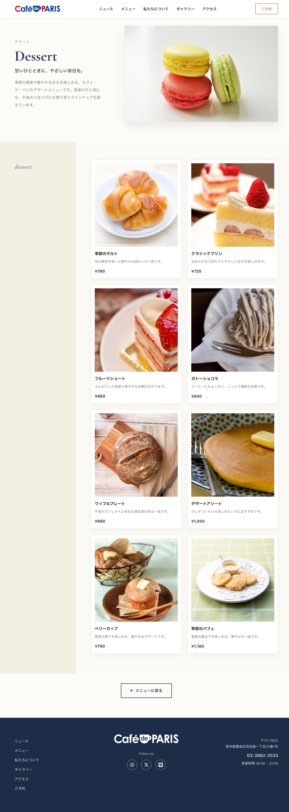
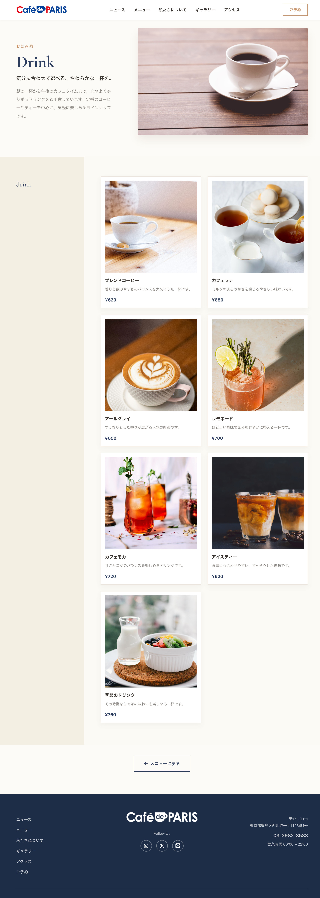
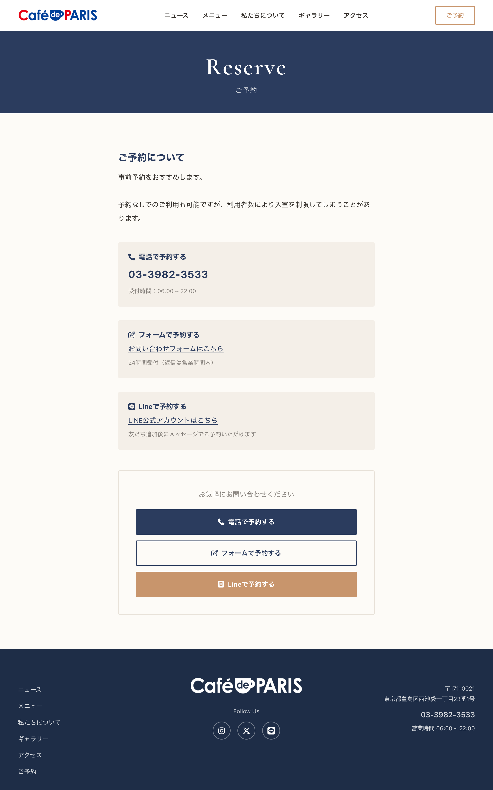
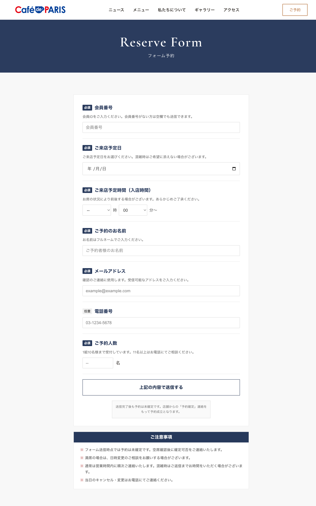
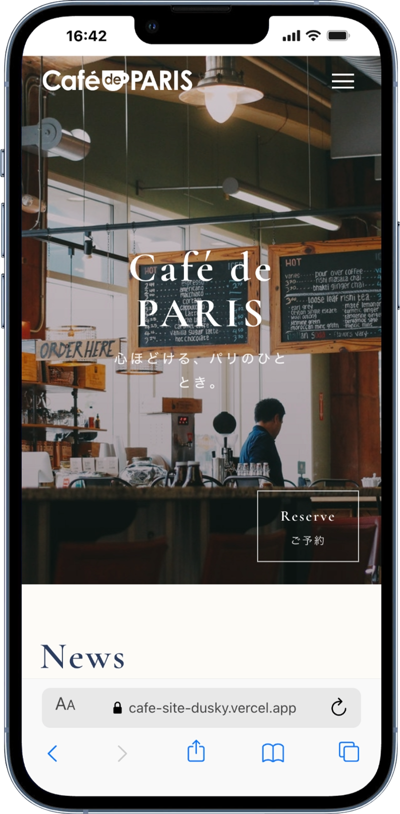
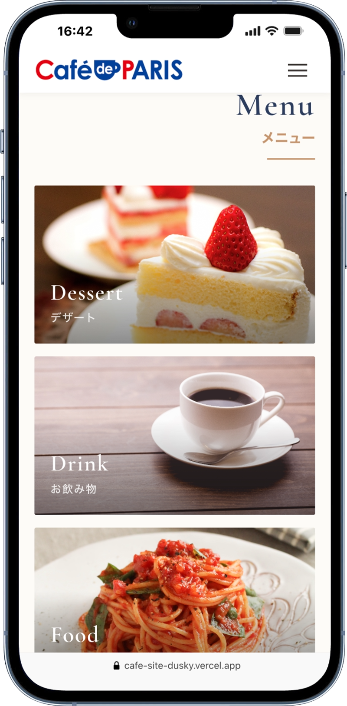
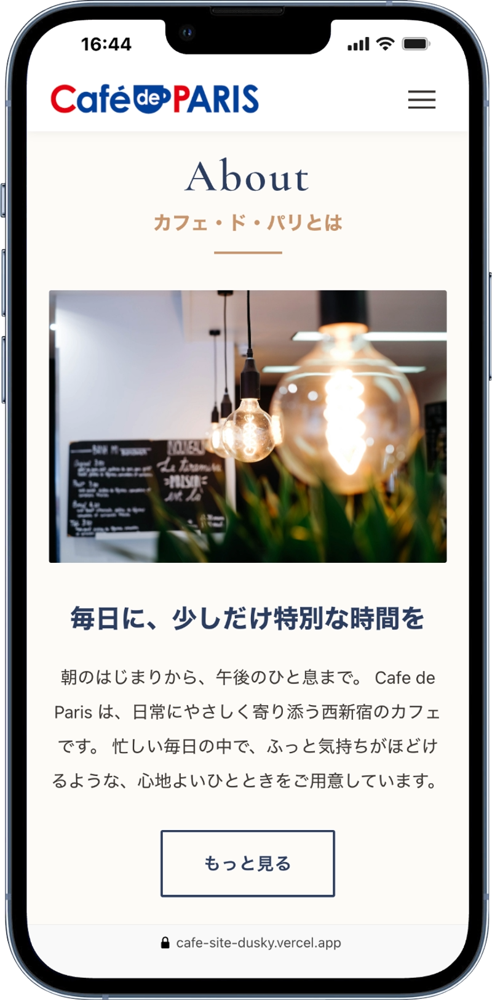

制作概要Outline
紙媒体中心だった店舗のデジタル化を目的に、20〜30代を想定した公式サイトを新規制作しました。左側にナビゲーションを固定した2カラム構成で、どのセクションからでも迷わず移動できる導線を意識しています。
西新宿周辺の20〜30代のオフィスワーカーや買い物客など、デジタルに慣れた若年層。
紙媒体中心の宣伝では若年層へのリーチが不足し、店舗の魅力や雰囲気が十分に伝わっていない点。
店舗の魅力を凝縮した公式サイトを構築し、視覚的訴求によって来店意欲を高め、認知向上と集客強化を図る。
内容詳細Detail
操作性とブランド性を両立したレイアウト設計
ナビゲーションを左側に固定配置し、スクロール時も常に表示される設計としました。初めてのユーザーでも直感的に操作できる、分かりやすい構成を意識しています。
メインカラーに深いブルー、アクセントにレッドを採用し、店舗ロゴの配色と統一することで、サイト全体に一体感を持たせました。
統一感を重視したセクションデザイン



トップページのメニューは3つのカテゴリに分け、カード形式で整理し、視覚的に分かりやすく表現しています。各カードをクリックすると、それぞれのカテゴリに対応した詳細ページへ遷移し、料理名・簡単な説明・価格などの情報を確認できる構成としました。詳細ページでもシンプルで統一感のあるカードレイアウトを採用し、見やすさと使いやすさを両立しています。
お問い合わせフォームによる予約機能の実装


こちらはカフェサイトの予約画面です。予約方法として、電話・お問い合わせフォーム・LINEの3つの手段を用意しています。左記の画面は、お問い合わせフォームを利用した予約画面を示しており、実際に送信が可能な予約機能として実装しています。
スマートフォン対応・レスポンシブデザイン実装



レスポンシブ対応により、スマートフォンでも見やすく操作しやすいレイアウトを実現しています。タップしやすいボタンサイズと、縦長画面に適した情報の並びで、外出先からの閲覧にも配慮した設計としています。